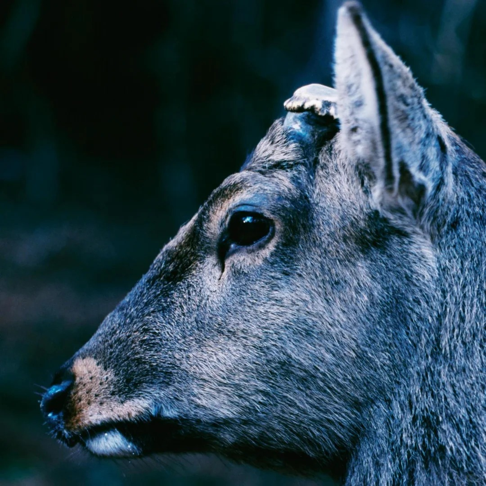

2026 — 至今
南京大学 · 新闻传播学院
传播学 · 学术硕士
研究方向：健康传播、内容分析。导师：温乃楠。

-->南京大学新闻传播学院 · 传播学学硕在读
史羽梵，本科毕业于南京大学，南京大学新闻传播学院传播学研一在读。
传播学 · 学术硕士
研究方向：健康传播、内容分析。导师：温乃楠。
新闻学 · 文学学士
毕业论文：场域与启蒙：孤岛时期上海《申报》救亡音乐报道研究（1937-1941）
团队核心成员
采用网络民族志、扎根理论的方法，对乳腺癌患者线上疾痛叙事材料开展描述分析，剖析其生理心理变化、社会支持差异与平台自我呈现差异。获南京大学第27届基础学科论坛三等奖、国家级优秀大创项目。
团队核心成员
访谈获取研究资料，使用福柯的权力理论，聚焦女性研究者田野遭遇性骚扰却选择默许的 “沉默现象”，解析现象背后女性作为受访者与身处学术界的双重困境。国家级优秀大创项目
1.2024年获南京大学第27届基础学科论坛三等奖
2. 2025年5月，数据新闻作品《一票否决！联合国安理会五常否决票分析》，第四届新视听融合创新创意大赛——内容创意赛道优秀奖